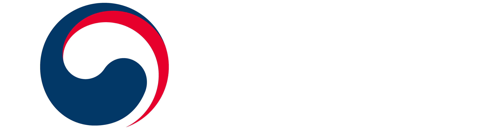
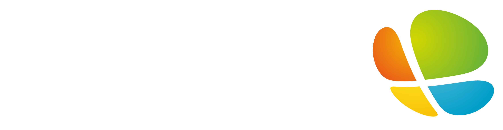
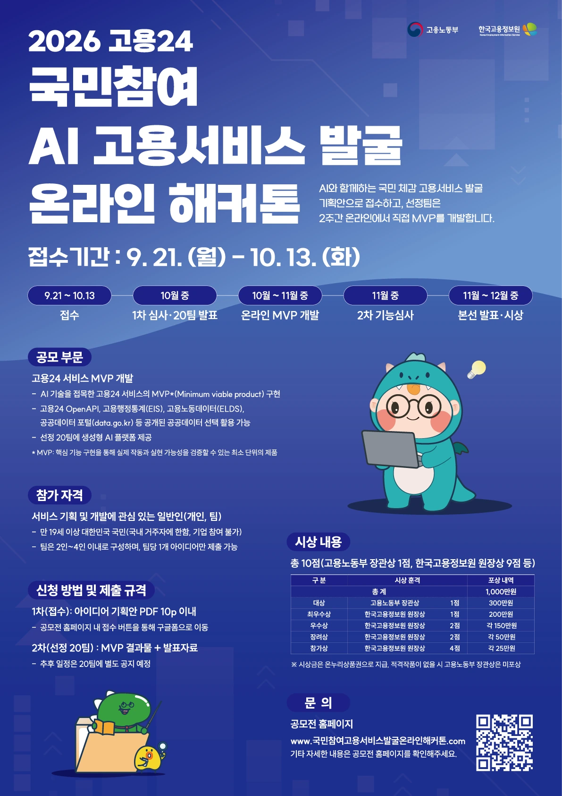
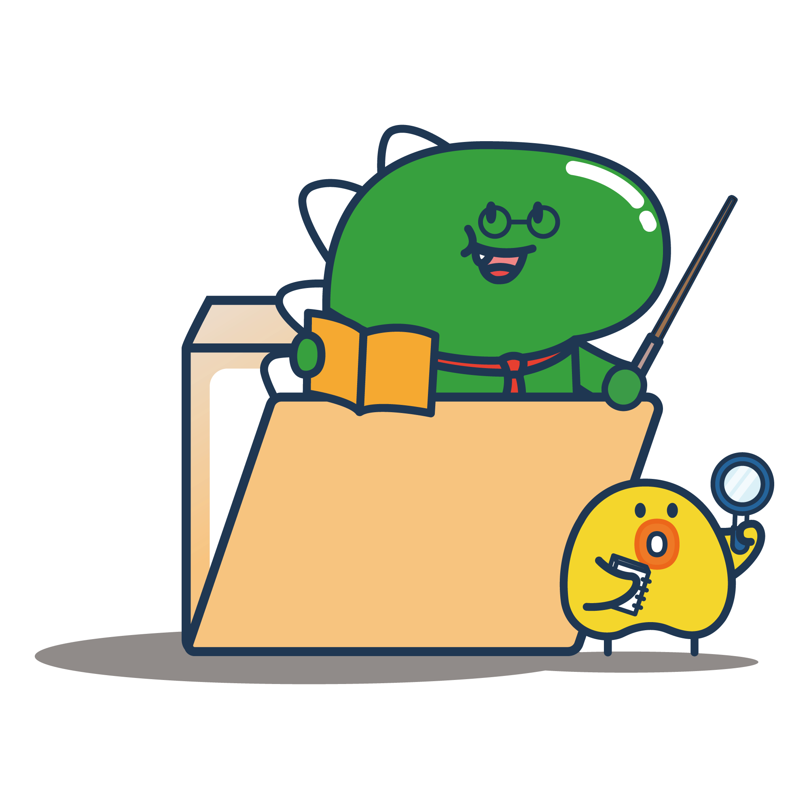

공지사항
전체보기 →등록된 공지사항이 없습니다.


2026 고용24
AI와 함께하는 국민 체감 고용서비스 발굴
기획안으로 접수하고, 선정팀은 2주간 온라인에서 직접 MVP를 개발합니다.
접수기간2026. 9. 21. — 10. 13. 18:00

고용노동부와 한국고용정보원이 함께하는 국민참여형 온라인 해커톤입니다.
AI 기술을 접목한 고용24 서비스 MVP를 개발합니다. 개인 또는 2~4인 팀으로 참여할 수 있으며 공개 공공데이터를 선택 활용할 수 있습니다.
공모요강 보러가기2026
접수 기간9. 21. (월) — 10. 13. (화) 18:00
10.13(화) 18시 마감
아이디어 기획안 심사 및 선정팀 안내
고용24 서비스 MVP 개발
서비스 기능심사 및 본선 참가팀 발표
장소·시간 추후 공개(서울)
등록된 공지사항이 없습니다.

FAQ에서 자주 묻는 내용을 확인하고, 개인 문의는 전용 문의 경로를 이용해 주세요.